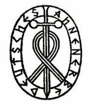
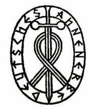

Детали строения тела собак сильно различаются от породы к породе, больше, чем у любых других видов животных, диких или одомашненных, поскольку собаки различаются по росту, весу, пропорциям головы и тела, длине хвоста и др.
С зоологической точки зрения, порода немецкий дог (англ. - Great Dane, нем. - Deutsche Doggen) относится к собакам (англ. – dog, нем. – doggen, лат. - Canis lupus familiaris) — плацентарным млекопитающим отряда хищных семейства псовых.
Немецкий дог был выведен человеком для охоты и охраны.
Будучи представителями хищных млекопитающих, у догов мощные мускулы и сердечно-сосудистая система, обеспечивающие как бег, так и выносливость, а также большие зубы для ловли, удержания и разрыва.
Ноги могут быстро толкать тело вперед, при необходимости прыгая, чтобы преследовать и догонять добычу. Они ходят на пальцах ног. Их задние лапы довольно крепкие. Передние лапы более подвижные и гибкие, только мышцы прикрепляют их к туловищу.
По размерам (длине) головы доги относятся к мезоцефалам, их скелет созревает до 16-18 месяцев. Они имеют выйную связку, отходящую от гребня 2 шейного позвонка и прикрепляющуюся к остистому отростку 1 грудного позвонка, которая поддерживает вес головы без активной мышечной нагрузки, тем самым экономя энергию. Эта связка позволяет собакам нести голову при беге на большие расстояния, например, следуя по следам запаха носом к земле, не затрачивая много энергии.

У собак нет аналога ключицы человека, что позволяет увеличить длину шага при беге и прыжках. Они ходят на четырёх пальцах. Пятый палец на задней ноге называется прибылым и является нежелательным элементом анатомии породистого животного.
В начале 21 века исследователями выявлен ген, отвечающий за размер собак. Регуляторная последовательность рядом с геном инсулиноподобного фактора роста 1 (IGF1) «является основным фактором, влияющим на размер тела во всех малых собаках». Возраст гена по уменьшению размеров собак менее 12000 лет, у волков он не встречается.
Домашняя собака является одной из потенциальных моделей для понимания генетических основ эволюционных изменений формы млекопитающих. Одомашнивание и искусственный направленный отбор по фенотипическим и поведенческим признакам привели к морфологическому разнообразию домашней собаки, не имеющему аналогов ни у одного из диких видов млекопитающих. Примерно за 15 000 лет уровень морфологического различия между породами собак стал значительно выше различия между многими родами диких канид. Сегодня 400 с лишним пород собак различаются по размерам, форме черепа и модификациям посткраниального скелета (в частности, костей конечностей) в такой степени, что при обнаружении их останков в дикой природе можно было бы говорить о видовых, а в некоторых случаях - родовых различиях.
Филогенетический анализ, проведенный на основе молекулярных маркеров, подтверждает происхождение домашней собаки от одного предка - волка (Canis lupus), опровергая гипотезу Дарвина. Нерешенным остается вопрос о том, произошли ли все линии собак от одной волчьей стаи или от нескольких волчьих стай. Большинство исследований вариаций в митохондриальной контрольной области предполагают, что взаимосвязь между митохондриальными линиями собак и волков является результатом происхождения собак от разных стай волков с последующей интрогрессивной гибридизацией между собаками и волками. Исследование вариаций в локусе Mhc (Major histocompatibility) также позволило предположить, что высокий уровень вариаций в этом локусе лучше всего объясняется продолжающимся беккроссингом между собаками и волками после одомашнивания. Эти результаты, однако, не подтверждают результаты исследования, проведенного на основе митохондриальной ДНК (мтДНК), предполагающего происхождение домашней собаки из "единого генофонда", а не в результате многочисленных событий одомашнивания и продолжающейся гибридизации с волчьими стаями.
Гипотезы, связанные с географическим и временным происхождением домашней собаки, напоминают исследования, связанные с происхождением человека. Одно из препятствий, которое необходимо преодолеть, связано с противоречиями между оценками времени с момента дивергенции, основанными на данных археологии, и оценками, полученными на основе молекулярных часов. На основе калибровочной точки между волком и койотом и митохондриальных молекулярных часов время расхождения между волком и домашней собакой было оценено в диапазоне от 76 до 135 тыс. лет назад, что значительно выше, чем 13-17 тыс. лет назад по археологическим данным. Это противоречие не устраняется более поздними интерпретациями молекулярных данных, а во многих случаях неясна основа для их переоценки. Исследователи указали, например, что мелкие собаки возникли около 12 тыс. лет назад, но не указали, как они пришли к этой дате. По-видимому, их аргументы основаны в первую очередь на археологических данных, свидетельствующих о первом появлении фенотипа мелкой собаки на Ближнем Востоке. Тем не менее, существуют и более древние даты происхождения собак, и следует поставить под сомнение датировку, основанную только на археологии, тем более что археологическая информация используется для подтверждения семи различных центров происхождения домашней собаки. В результате противоречий между датами, полученными на основе молекулярных и археологических данных, создается впечатление, что в большинстве последних молекулярных исследований используются данные археологических раскопок. Несоответствие между временем дивергенции, полученным на основе ископаемых материалов и молекул, характерно не только для происхождения собак. Отчасти это несоответствие связано с погрешностью, присущей любым оценкам времени с момента дивергенции для недавних расхождений между линиями, особенно когда происхождение таких линий осложнено возможностью множественного происхождения от предкового фонда и смешения.
Вопросы, связанные с оценкой центра происхождения домашней собаки, остаются сложными, и это опять-таки связано с тем, как интерпретировать археологические и молекулярные данные. Некоторые из самых ранних ископаемых останков, идентифицированных как собака, относятся к периоду между 12 и 17 тыс. лет назад в Европе и на Ближнем Востоке, и есть некоторые свидетельства того, что восточноевропейские популяции волков внесли свой вклад в происхождение домашней собаки. Напротив, основываясь на более высоком уровне вариаций мтДНК у собак из Восточной Азии и общем филогеографическом разделении этих вариаций, часть ученых предполагает единое восточноазиатское происхождение домашней собаки, и этот вывод согласуется с некоторыми археологическими данными.
Несмотря на высокий уровень фенотипических различий между породами, генетическая дивергенция внутри домашней собаки и между большинством видов рода Canis довольно низкая. Все виды Canis имеют идентичные кариотипы, а генетические сравнения на основе митохондриальных и ядерных генов показывают низкий уровень дивергенции между представителями этого рода. Отчасти такой уровень генетического сходства объясняет межвидовую фертильность, наблюдаемую у представителей рода Canis. Собака пережила два "узких места" в популяции, первое из которых связано с одомашниванием, а второе - с формированием различных пород, причем последнее ответственно за большую часть потери генетического разнообразия. Это привело к значительному увеличению неравновесия связей у собак по сравнению с человеком. Хотя маркеры мтДНК не позволяют выявить породные признаки [пока - GD], как микросателлитные локусы, так и SNPs способны отнести отдельных чистопородных собак к определенной породе. Тем не менее, на сегодняшний день генетические маркеры значительно менее эффективны для создания хорошо обоснованных филогенетических групп пород, в первую очередь из-за того, что большинство пород различаются скорее по частоте аллелей, чем по фиксированным различиям. Поэтому реконструкция общей филогении домашних собак значительно усложняется в связи с недавним происхождением многих пород в сочетании с высоким уровнем смешения в процессе породообразования.
Расшифровка генетических причин морфологического разнообразия домашней собаки представляет значительные трудности. Подходы "сверху вниз", использующие картирование QTL, картирование неравновесия сцепления и анализ ассоциаций, - все это методы, использующие анализ последовательности генома собаки. Такие методы позволяют обойтись без больших родословных. Этот подход оказался полезным для выявления генов-кандидатов и мутаций, ответственных за признаки, связанные, например, с пятнистостью, или гребнем шерсти у родезийских риджбеков. Эти же методы позволили выявить хромосомный регион, вариации которого, по-видимому, связаны с различиями в размерах собак. Несмотря на эти достижения сравнительной геномики и картирования с помощью маркеров, расшифровка механизмов, ответственных за возникновение формы у домашней собаки, является сложной задачей.
У собаки есть два типа фоторецепторов колбочек, что делает ее дихроматом. Колбочки имеют максимальную чувствительность в спектре между 429 и 555нм. Поведенческие исследования показывают, что зрительный мир собак состоит из желтого, синего и серого цветов, но им трудно различать красный и зеленый, их цветовое зрение эквивалентно красно-зеленому дальтонизму у людей (дейтеранопия). Когда человек воспринимает объект как «красный», этот объект кажется собаке «желтым», человеческое восприятие «зеленого» кажется собаке «белым», оттенком серого. Эта белая область (нейтральная точка) находится около 480нм, для людей она - сине-зеленая. Для собак длины волн света , превышающие нейтральную точку, неотличимы друг от друга, все они превращаются в желтый.
Собаки используют цвет вместо яркости, чтобы различать светлый или темно-синий/желтый. Они менее чувствительны к различию в оттенках серого, чем люди, и также менее чувствительны к яркости (вдвое), чем люди. Зрительная система эволюционировала, чтобы помочь умелой охоте. Хотя у собак острота зрения низкая, их чувствительность к движущимся объектам очень высока. Собаки могут различать людей на расстоянии от 800 до 900 метров; однако этот диапазон уменьшается до 500–600 метров, если человек неподвижен.
Как сумеречные охотники, собаки часто полагаются на свое зрение в условиях низкой освещенности: у них очень большие зрачки, высокая плотность палочек в ямке, повышенная частота мерцания tapetum lucidum. Тапетум - это отражающая поверхность за сетчаткой, которая отражает свет, чтобы дать фоторецепторам второй шанс уловить фотоны. Глаза собак разных пород имеют разные формы, размеры и конфигурации сетчатки. Длинноносые породы обладают «полосой зрения» - широкой областью, которая проходит по ширине сетчатки и дает им очень широкое поле зрения. Поле зрения по горизрнтали достигает 270° (по сравнению с 180° у человека).
Частотный диапазон собачьего слуха составляет от 16-40 Гц (20–70Гц для человека) и до 45–60 кГц (13–20кГц для человека), что означает, что собаки могут улавливать звуки далеко за пределами верхнего предела слухового спектра человека. У собак подвижный слух, что позволяет им быстро определять точное местоположение звука. Восемнадцать или более мышц могут наклонять, вращать, поднимать или опускать ухо собаки. Собака может определять местоположение звука намного быстрее, чем человек, а также слышать звуки на четырехкратном расстоянии по сравнению с человеком.
В то время как в человеческом мозге преобладает большая зрительная кора, в мозгу собаки преобладает большая обонятельная кора. У собак примерно в сорок раз больше чувствительных к запаху рецепторов, чем у людей, общее число обонятельных рецепторов достигает 125 миллионов и даже 300 миллионов. Рецепторы расположены на площади размером с карманный носовой платок (по сравнению с 5 миллионами на площади размером с почтовую марку для человека). У собаки подвижные ноздри, которые помогают ей определять направление запаха. В отличие от людей, собаке не нужно наполнять легкие для анализа запазов. Нос собаки имеет внутри костную структуру, которая позволяет вдыхаемому воздуху проходить над костной полкой, и к ней прилипают молекулы запаха. Воздух над этой полкой не вымывается, когда собака нормально дышит, поэтому молекулы запаха накапливаются в носовых полостях, и запах растет с интенсивностью, позволяя собаке способность улавливать самые слабые запахи.
У собак около 1700 вкусовых рецепторов по сравнению с примерно 9000 у людей. У собак также есть вкусовые рецепторы, которые настроены на воду, но не встречаются у людей. Это вкусовое ощущение проявляется на кончике языка, который она изгибает, чтобы захватывать воду. Когда собака ест соленую или сладкую пищу, чувствительность к вкусу воды увеличивается.
Собаки регулируют температуру своего тела посредством дыхания и потоотделения через лапы.

Прикус немецкого дога называется ножницами. Это значит, что в сомкнутом состоянии верхние резцы заходят плотно спереди нижних на расстояние около трети высоты зубов. Стандарт определяет формулу в 42 крепких, здоровых зуба, из которых 20 располагаются на верхней челюсти, а 22 - на нижней. Премоляры Р1 на обеих сторонах могут отсутствовать. Интересно узнать историю, почему требование к наличию Р1 в стандарте не является обязательным.

Общепринятого или официального рисунка немецкого дога, отражающего особенности породы, в Европе или России не существует. Таким образом, у судей, заводчиков и владельцев собак есть разнообразные, зачастую не совпадающие представления, как должен выглядеть немецкий дог, соответствующий стандарту породы, принятому Международной федерацией кинологов. Рисунки в статье не связаны с официальным стандартом породы, определенным в Европе и России.
Ввиду почти полного отсутствия в стандарте породы измеряемых характеристик, предпринимались попытки привнести объективные метрики для оценки соответствия стандарту.
Одна из таких попыток принадлежит перу Линды и Михаэлю ДеВинсент-Эшли.

Чтобы оценить соответствие породныым требованиям авторы предлашают найти 6 красных точек на картинке, которые соответствуют верхней точке холки, плечу, нижней точки грудной клетки, ягодице, коленке, и средней части нижней части бедра. Затем следует соединить каждую тройку точек как показано на рисунке. По степени отклонения нарисованных линий, соединяющих точки на картинке вашей собаки авторы предлагают сделать вывод о степени отклонения от представлений о породе.
В условиях, когда стандарт не имеет количественных метрик и один судья может сделать собаку чемпионом, а другой при этом не дать даже хорошей оценки, остается только приветствовать создание иллюстрированных стандартов, как это сделал АКС. Тем более, что прообразом для идеального дога по мнению Д.Готье стал Ch. Honey Hollow Stormi Rudio.

Американский породный клуб GDCA в 2021 выпустил электронную брошюру, дающую представление о породе, кратко - о ее истории. В брошюре на 94 страницах представлено множество фотографий современных догов. Также приводятся два рисунка, отражающие современный взгляд на отдельные пропорции породы.


На сегодняшний день визуализированные пропорции дога наиболее полно отражены в Руководстве для судей, опубликованном Немецким клубом породы в 2018 году.

На 68 страницах Руководства представлено множество рисунков для желательных, допустимых и дисквалифицирующих характеристик стандарта породы. Много внимания уделено цвету и рисунку.


Nadine Szczesny (Deutsche Doggen von der Perle am Rhein), также внесла свой вклад в визуализацию внешнего вида породы, используя программу Artificial Intelligence (AI). Современные компьютерные технологии дают очень реалистичные изображения, которыми можно пользоваться для изучения строения собаки, хотя в медицинских целях лучше, конечно, использовать анатомические атласы. Страничка питомника https://www.vonderperleamrhein.de
Более детальные сведения об анатомии можно почерпнуть из следующих источников.


 
